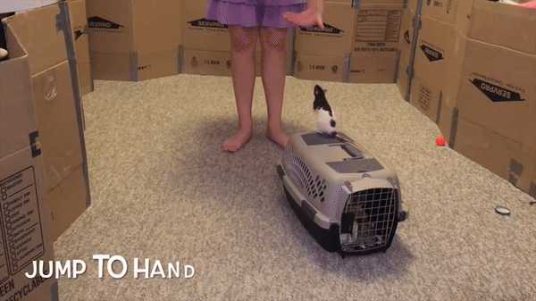

The modern fancy rat originates from the brown rat, or rattus novegicus. Fancy rats were originally domesticated in Europe by a man known as Jack Black, a renowned rat catcher hired by Queen Victoria. Jack began keeping the rats he found with more interesting colors and training them to perform tricks to impress customers. He began training the rats with more desirable coat colors, and selling them to female clients as pets. It's even rumored that he sold rats to queen Victoria as pets. Although rats did not remain as popular, they have become an increasingly popular pet across the globe. Rats now come in many colors, color patterns, ear patterns, and fur patterns, such as white, cinnamon, fawn, dumbo, standard, curly, long-haired, or even hairless.


Rats popularity has grown significantly in recent years, with the American Pet Products Association reporting that about half a million families own a rat or mouse, double the number since 2006. Rats are incredibly intelligent, clean, and loving. Rats produce a clicking noise referred to as "bruxing" when they are feeling happy. Bruxing is a result of rats clicking their teeth together quickly, which is also a behavior they perform to trim their teeth down. A recent study actually found that rats enjoyed being tickled, and produce a laughing sound at a frequence inaudible to humans. I intend to change your existing opinions on rats by providing a brief list of their amazing qualities.
Rats are incredibly intelligent creatures, often referred to as having the mental capacity of a human toddler. Pet rats can be trained to use a litter box, recognize, respond, and come to their own names, and thousands of other tricks. Rats are often used in lab research because of their innate ability to learn complex tasks quickly. Rats can even be trained to fetch you a tissue, put a ring on your finger for you, or put a tiny basketball through a hoop. Here's a list of tricks that I have taught my rats in less than 30 minutes:
| Trick Name | Description | Gif |
|---|---|---|
| Come | I first taught my rats to respond to a clicking noise I made, similar to a clicker used in dog training. Then I taught them to respond specifically to their names so I could call them each individually. |  |
| Climb | I taught my rats to climb from the floor, up my leg, up my side, and onto my shoulder |  |
| Spin | This trick entails training your rat to turn their entire body in a circle. I taught mine by leading them in a circle with a treat, and they learned this trick in about 5 minutes. |  |
| Paw | This trick involves teaching your rats to place their paw onto your finger on command. This trick also serves as the starting point for many other, more complex tricks. It can also be used as "targeting", although some trainers prefer to train their rats to place their nose on a target, rather than their paw. | |
| Jump | This trick has two different forms that my rats can perform. The first version I taught, I trained them to jump from the floor into my elevated hand. The other version, I taught them to jump off of the top of their cage or my dresser into my hands. |  |

Rats are incredibly clean animals. They groom themselves multiple times a day, even more than cats, and you can bathe them without harm if you choose, although it is almost never necessary unless your rat is old, obese, or sick. Rats and mice are actually much less likely to transmit parasites and viruses to a human than cats and dogs. Although it's often perpetuated that black rats spread the plague, this is mostly inaccurate. Black rats carried the fleas that spread the plague, but as I stated before, fancy rats are descendants of the brown rat. Rats even have the compulsion to groom each other and their humans. Not only is this behavior important for keeping themselves and the ones they love clean, it is also a loving behavior. Often times, rats will groom their humans when expressing how happy they are.
For an experienced pet owner, rats can be a very low maintenance pet. Other than weekly deep cleanings, and attention to diet, rats don't require much effort to keep healthy and happy. Rats have to be kept in pairs or groups because they are so social. Without brothers or sisters, rats can become lethargic and depressed. However, a group of rats is called a mischief, so why wouldn't you want to be apart of a mischief? Additionally, they require at least an hour out of their cage per day, but that's not difficult to accomplish since they can be trained well. Some people even let their rats free-roam around their house, apartment, or specific rooms. While that can be risky because they could get into something dangerous or chew something important, if your place is properly rat-proofed and rat-safe, it's certaintly an option. You can also just bring them out to play on the couch with you while you watch TV, or cuddle while you watch movies.
The most incredible part of owning rats is there ability to accept love, and give love back. Each rat has their own unique personality, but in general, they are adventurous, curious, sweet, loving, and cuddly. Rats love to run around and get into things, or just sleep on your chest while you watch a movie or do homework. In general, rats just want to be near you. Because rats are so social, they become incredibly attached to their owners, and form a very close bond. This means that they'll always be there to welcome you home, or comfort you after a long day. A recent study actual found that rats can interpret distressed feelings in other rats, and respond empathetically. Rats also have several "happy behaviors", similar to a cat purring, that they enjoy sharing with their humans. Rats click their teeth together rapidly when they're happy, and even sometimes wag their tail like a dog. Unlike most small animals, they truly enjoy attention and love, and they also return the favor by cuddling with you or grooming you. You can also share a lot of your snacks with them, like fruits, vegetables, crackers, and plenty of other options. They also recognize you as part of their mischief!